International Convention for the Prevention of Pollution from Ships (MARPOL)
Adoption: 1973 (Convention), 1978 (1978 Protocol), 1997 (Protocol - Annex VI); Entry into force: 2 October 1983 (Annexes I and II).
The International Convention for the Prevention of Pollution from Ships (MARPOL) is the main international convention covering prevention of pollution of the marine environment by ships from operational or accidental causes.
The MARPOL Convention was adopted on 2 November 1973 at IMO. The Protocol of 1978 was adopted in response to a spate of tanker accidents in 1976-1977. As the 1973 MARPOL Convention had not yet entered into force, the 1978 MARPOL Protocol absorbed the parent Convention. The combined instrument entered into force on 2 October 1983. In 1997, a Protocol was adopted to amend the Convention and a new Annex VI was added which entered into force on 19 May 2005. MARPOL has been updated by amendments through the years.
The Convention includes regulations aimed at preventing and minimizing pollution from ships - both accidental pollution and that from routine operations - and currently includes six technical Annexes. Special Areas with strict controls on operational discharges are included in most Annexes.
Annex I Regulations for the Prevention of Pollution by Oil (entered into force 2 October 1983)
Covers prevention of pollution by oil from operational measures as well as from accidental discharges; the 1992 amendments to Annex I made it mandatory for new oil tankers to have double hulls and brought in a phase-in schedule for existing tankers to fit double hulls, which was subsequently revised in 2001 and 2003.
Annex II Regulations for the Control of Pollution by Noxious Liquid Substances in Bulk (entered into force 2 October 1983, provisions took effect from 6 April 1987)
Details the discharge criteria and measures for the control of pollution by noxious liquid substances carried in bulk; some 250 substances were evaluated and included in the list appended to the Convention; the discharge of their residues is allowed only to reception facilities until certain concentrations and conditions (which vary with the category of substances) are complied with.
In any case, no discharge of residues containing noxious substances is permitted within 12 miles of the nearest land.
Annex III Prevention of Pollution by Harmful Substances Carried by Sea in Packaged Form (entered into force 1 July 1992)
Contains general requirements for the issuing of detailed standards on packing, marking, labelling, documentation, stowage, quantity limitations, exceptions and notifications.
For the purpose of this Annex, “harmful substances” are those substances which are identified as marine pollutants in the International Maritime Dangerous Goods Code (IMDG Code) or which meet the criteria in the Appendix of Annex III.
Annex IV Prevention of Pollution by Sewage from Ships (entered into force 27 September 2003)
Contains requirements to control pollution of the sea by sewage; the discharge of sewage into the sea is prohibited, except when the ship has in operation an approved sewage treatment plant or when the ship is discharging comminuted and disinfected sewage using an approved system at a distance of more than three nautical miles from the nearest land; sewage which is not comminuted or disinfected has to be discharged at a distance of more than 12 nautical miles from the nearest land.
Annex V Prevention of Pollution by Garbage from Ships (entered into force 31 December 1988)
Deals with different types of garbage and specifies the distances from land and the manner in which they may be disposed of; the most important feature of the Annex is the complete ban imposed on the disposal into the sea of all forms of plastics.
Annex VI Prevention of Air Pollution from Ships (entered into force 19 May 2005)
Sets limits on sulphur oxide and nitrogen oxide emissions from ship exhausts and prohibits deliberate emissions of ozone depleting substances; designated emission control areas set more stringent standards for SOx, NOx and particulate matter. A chapter adopted in 2011 covers mandatory technical and operational energy efficiency measures aimed at reducing greenhouse gas emissions from ships.
------
IMO's marine protection treaty, the MARPOL Convention, includes six technical Annexes. Click on the images below to learn how the treaty makes a difference in marine protection.

| How does IMO's marine protection treaty make a difference? Annexes I-VI | ||
|---|---|---|
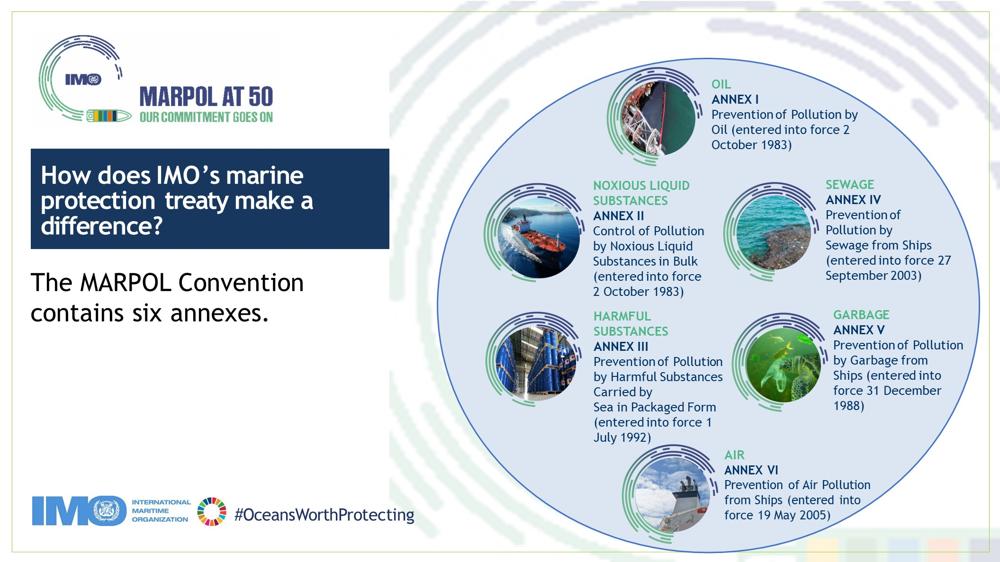 | 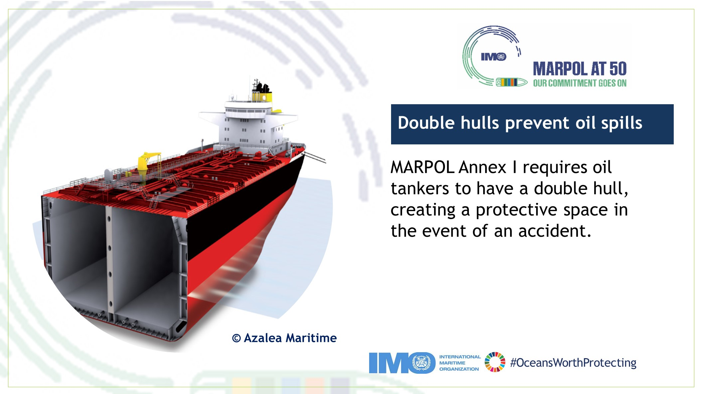 | 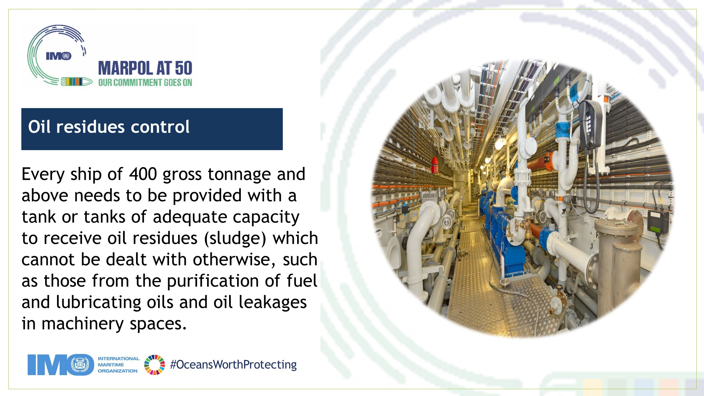 |
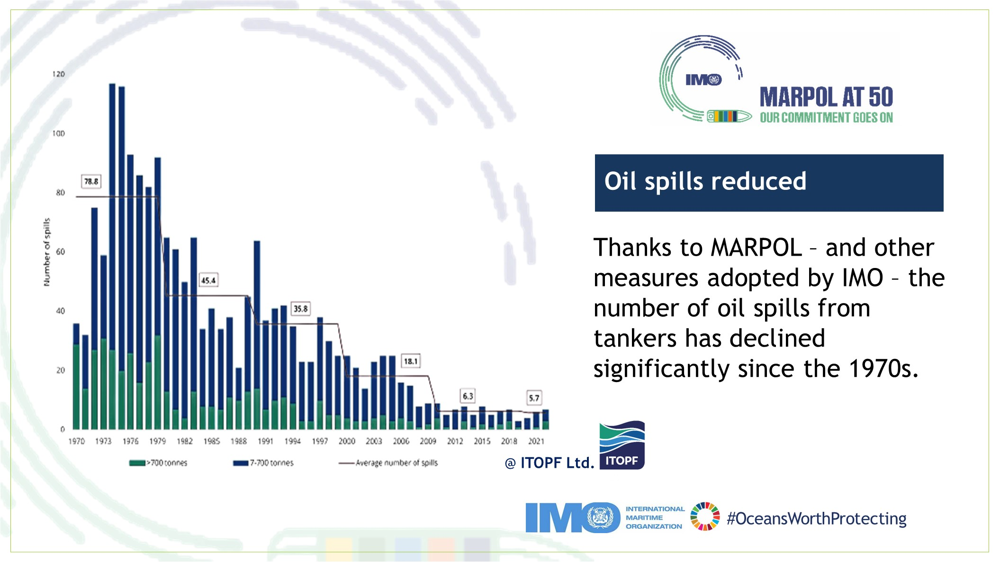 | 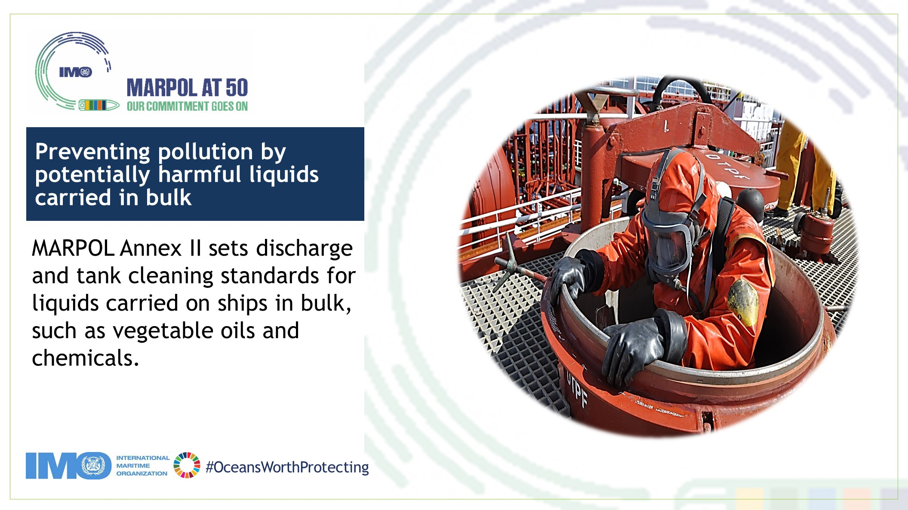 | 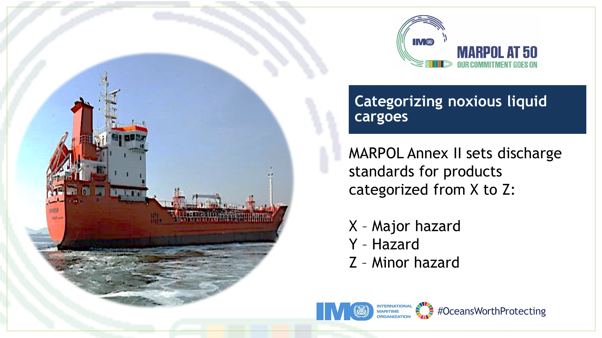 |
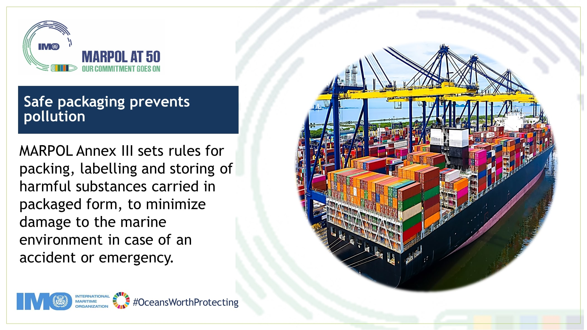 | 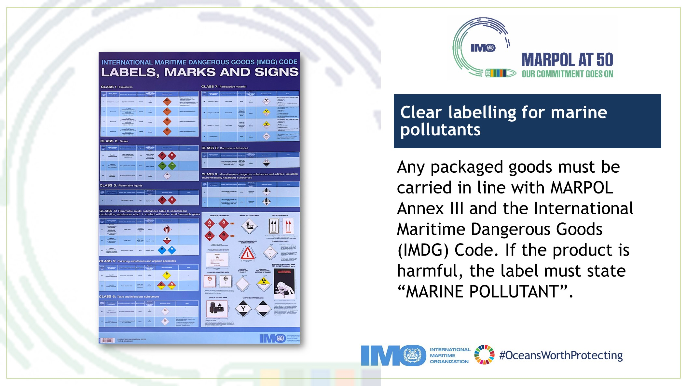 | 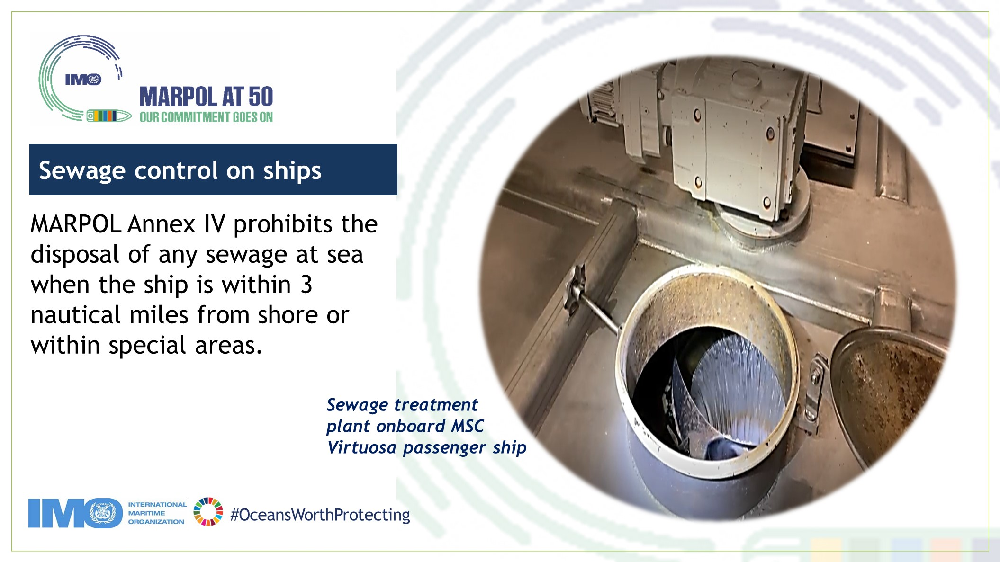 |
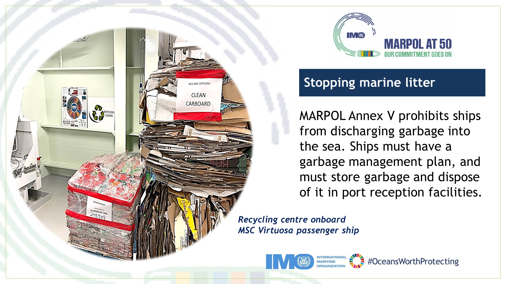 | 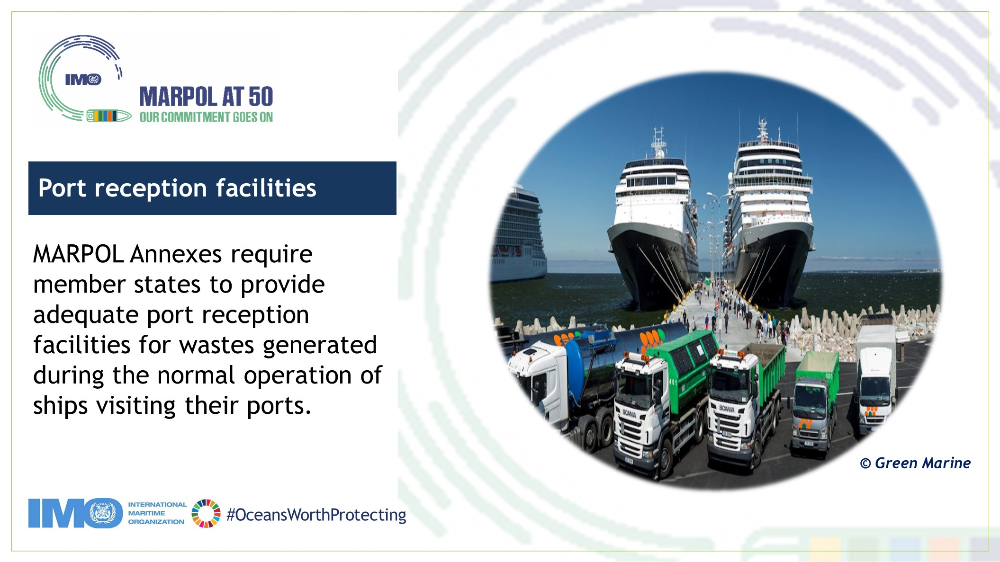 | 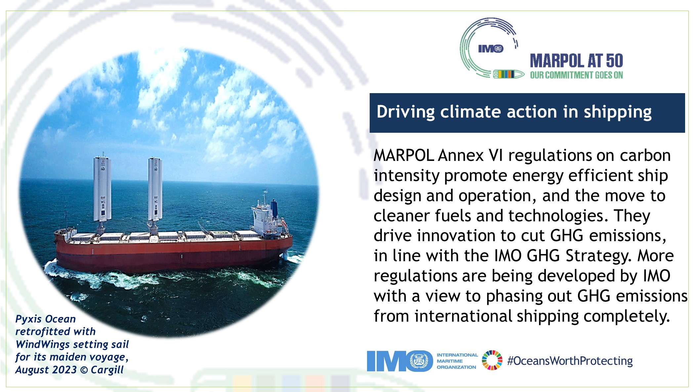 |
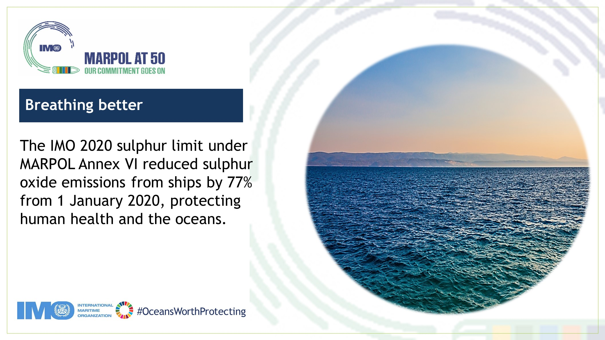 | 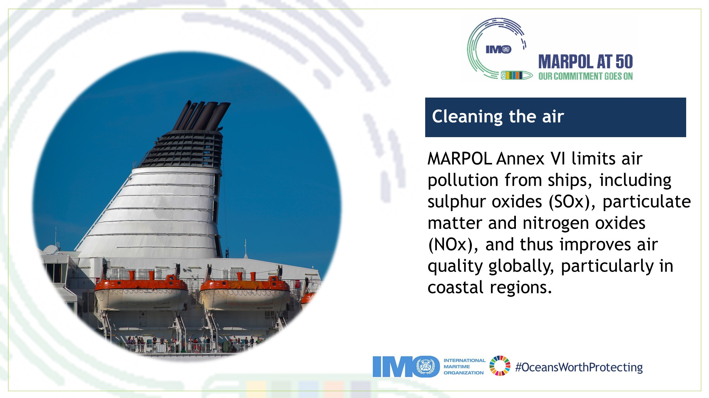 | 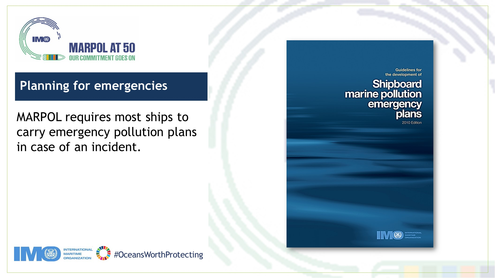 |
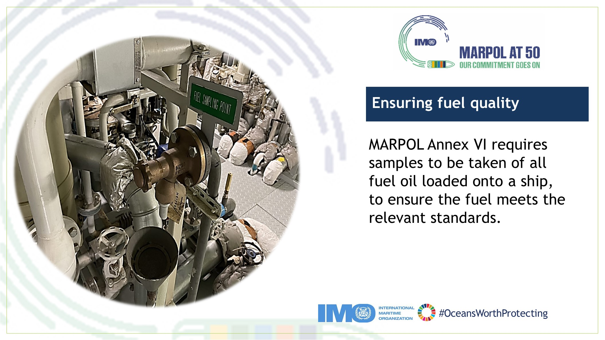 | 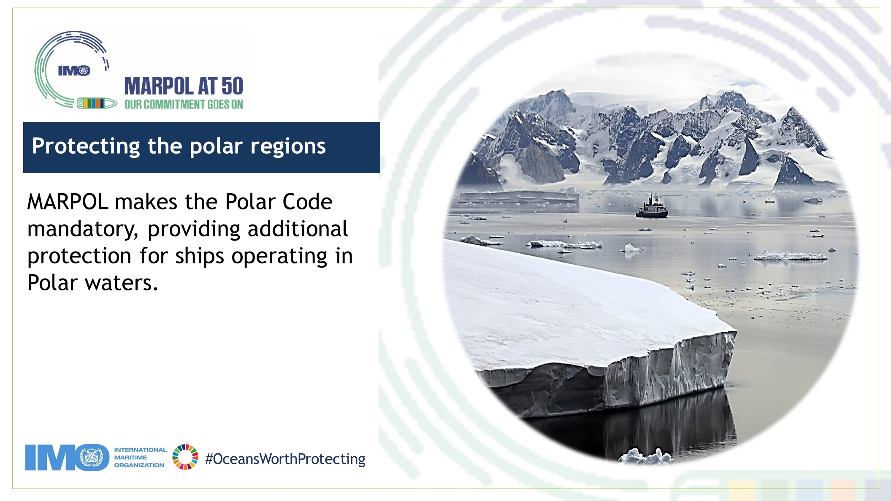 | 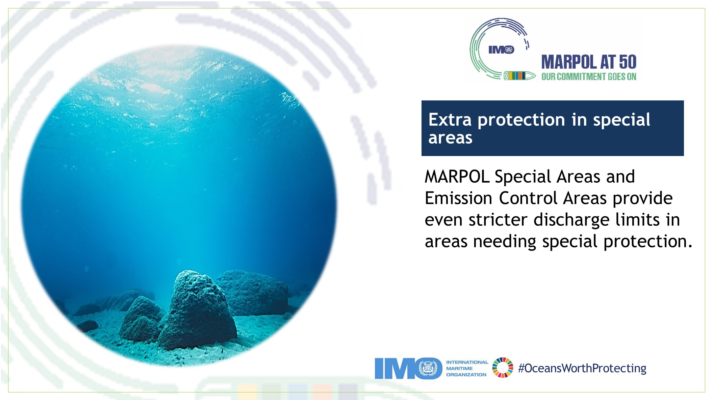 |